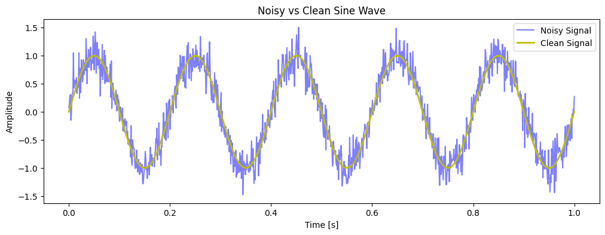
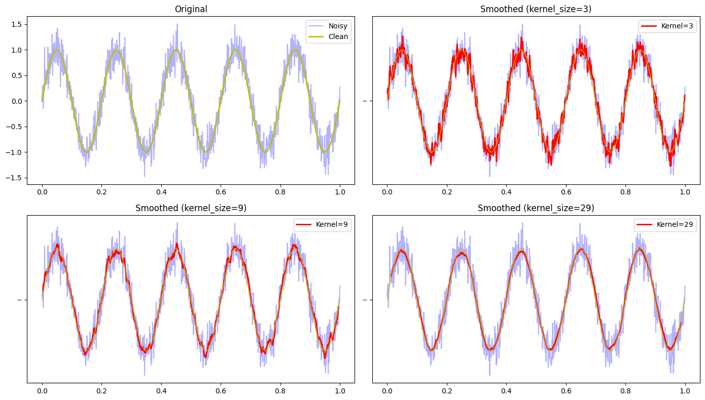
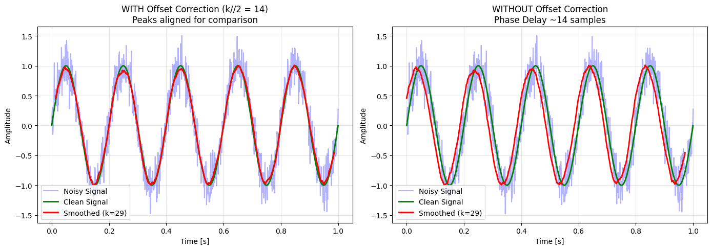
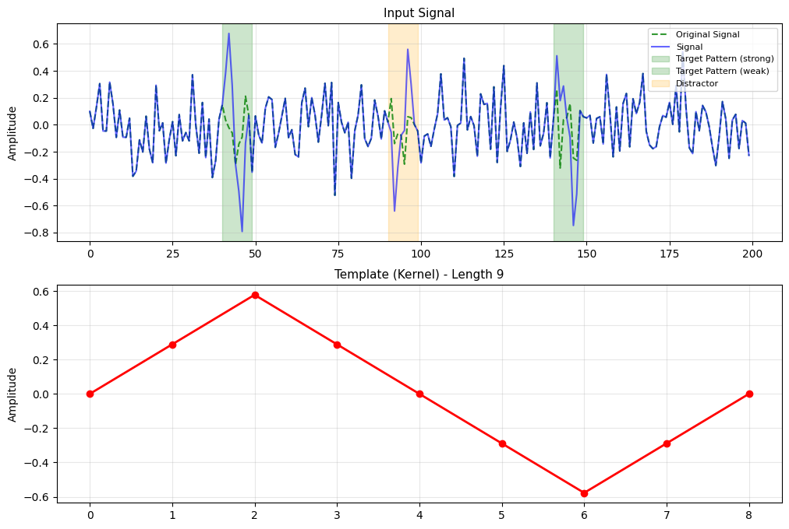
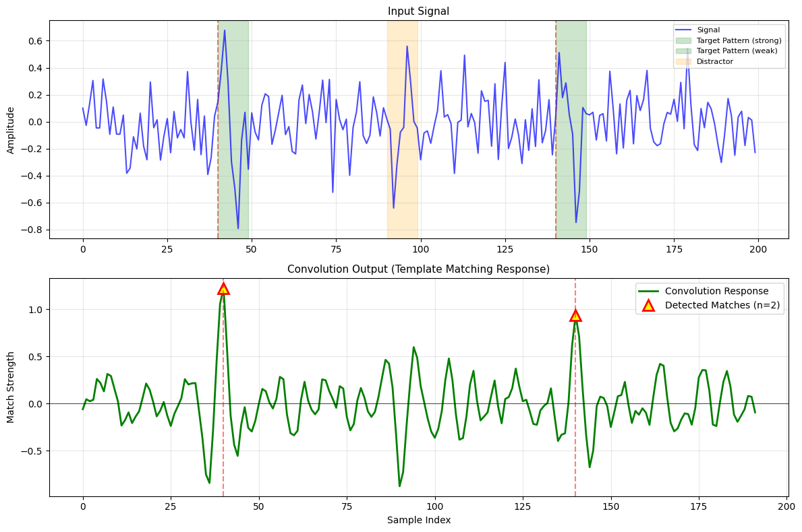
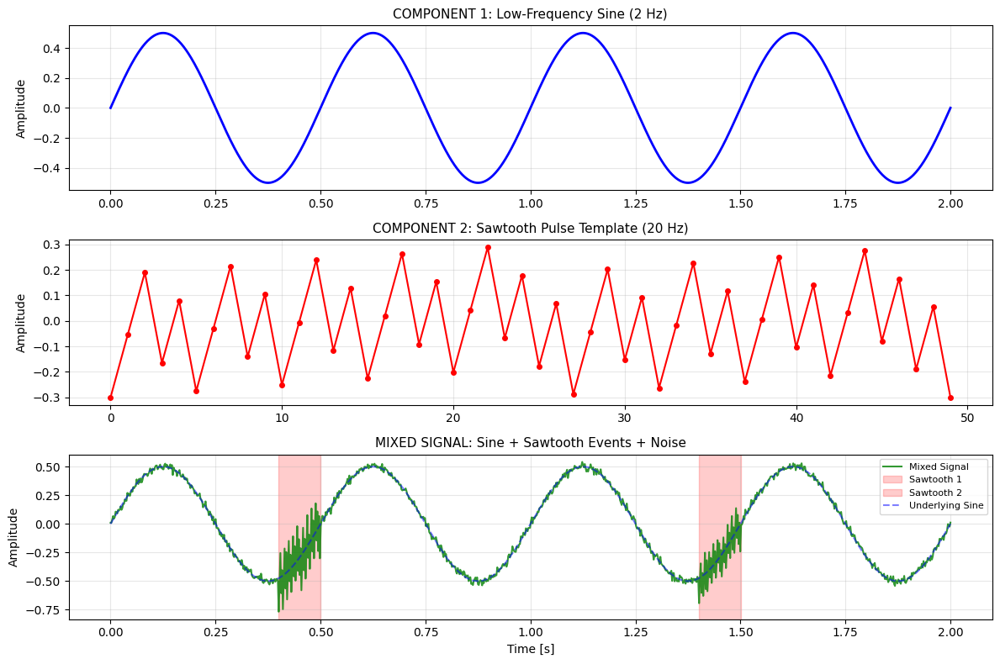
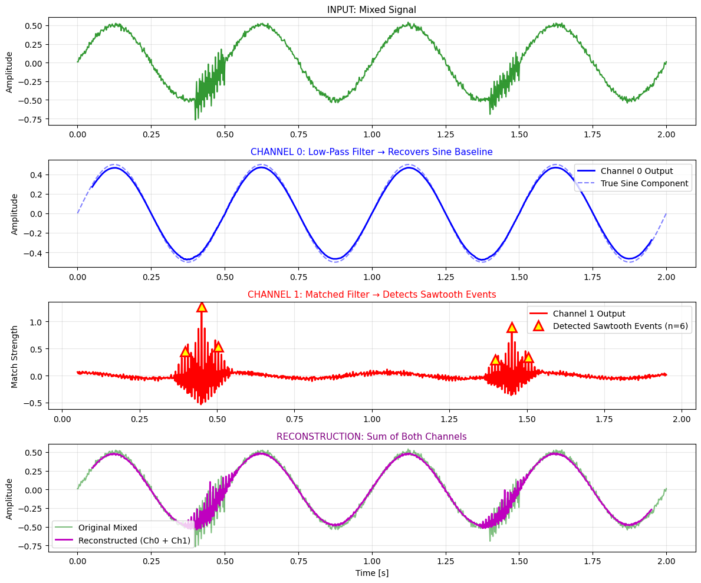
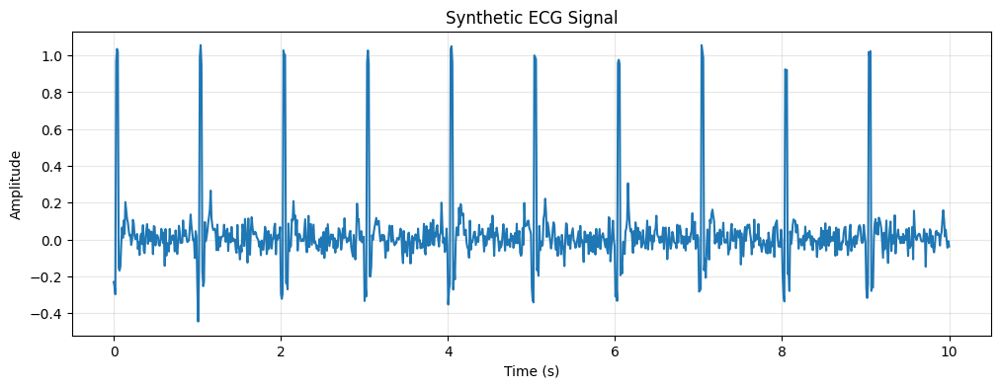
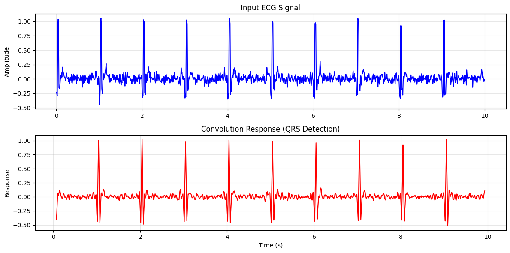
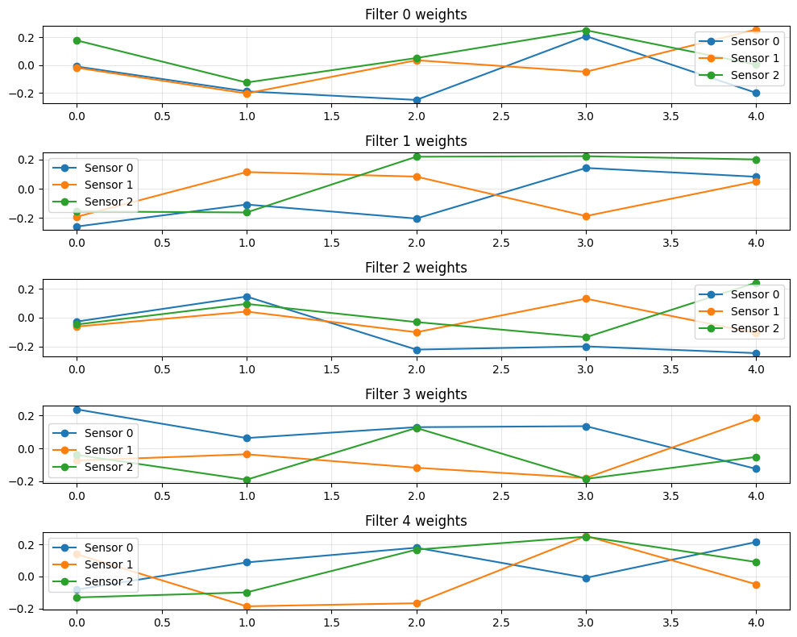

Introduction to 1D Convolutional Neural Networks#
Mahmood Amintoosi, Spring 2026
Computer Science Dept, Ferdowsi University of Mashhad
Learning Objectives#
By the end of this chapter, you will:
Understand how 1D convolution works mathematically and intuitively
Apply 1D CNNs to time series data and signal processing tasks
Recognize the relationship between kernel size, receptive field, and smoothing effects
Be prepared to extend these concepts to 2D convolution for images
1. Why 1D Convolution?#
Before diving into image processing with 2D CNNs, let’s understand convolution in one dimension. Many real-world problems involve sequential or time-series data:
Domain |
Example Data |
|---|---|
Finance |
Stock prices, trading volumes over time |
Healthcare |
ECG signals, heart rate monitoring |
Audio |
Sound waves, speech signals |
IoT/Sensors |
Temperature readings, accelerometer data |
Natural Language |
Text sequences (though often handled differently) |
Traffic Forecasting |
Traffic parameters, like speed and volume |
1D CNNs are particularly effective for these data types because they can:
Detect local patterns regardless of their position in the sequence
Reduce dimensionality while preserving important features
Share parameters across the entire sequence
2. Mathematical Foundation of 1D Convolution#
2.1 The Convolution Operation#
Given an input signal \(x\) of length \(n\) and a kernel (filter) \(w\) of length \(k\), the convolution operation produces output \(y\):
where \(i\) ranges from \(0\) to \(n-k\) (for “valid” convolution).
2.2 Manual Example#
Let’s trace through a simple convolution:
Input x: [1, 5, 3, 4, 8]
Kernel w: [1/3, 1/3, 1/3] (moving average filter)
y[0] = 1×(1/3) + 5×(1/3) + 3×(1/3) = 9/3 = 3.0
y[1] = 5×(1/3) + 3×(1/3) + 4×(1/3) = 12/3 = 4.0
y[2] = 3×(1/3) + 4×(1/3) + 8×(1/3) = 15/3 = 5.0
Output y: [3.0, 4.0, 5.0]
Notice how the kernel “slides” across the input, computing a weighted sum at each position.
2.3 Different Kernel Effects#
The same input with different kernels produces different results:
Kernel |
Effect |
Output for [1, 5, 3, 4, 8] |
|---|---|---|
|
Moving average (smoothing) |
|
|
Weighted average (center-weighted) |
|
|
Edge detection (approximate derivative) |
|
|
Second derivative (peak detection) |
|
Exercise: Verify the edge detection kernel output. What pattern do you notice about where the values change significantly?
3. Implementing 1D Convolution#
3.1 Using SciPy#
import numpy as np
from scipy import signal
# Define input and kernel
x = np.array([1, 5, 3, 4, 8])
w = np.array([1/3, 1/3, 1/3])
# Apply convolution
y = signal.convolve(x, w, mode="valid")
print(f"Input: {x}")
print(f"Output: {y}")
Input: [1 5 3 4 8]
Output: [3. 4. 5.]
Mode options:
"valid": Returns only positions where kernel fully overlaps input (size: \(n-k+1\))"same": Returns same length as input with zero-padding"full": Returns all positions including partial overlaps (size: \(n+k-1\))
3.2 Using PyTorch#
PyTorch expects input tensors with shape (batch_size, channels, length):
import torch
import torch.nn as nn
import numpy as np
# Reshape input: (samples, channels, length)
x = np.array([1, 5, 3, 4, 8])
x_tensor = torch.from_numpy(x).float().view(1, 1, 5)
# Define Conv1d layer
conv1d = nn.Conv1d(in_channels=1, out_channels=1, kernel_size=3, bias=False)
# Initialize with moving average weights
w = torch.tensor([1/3, 1/3, 1/3]).view(1, 1, 3)
conv1d.weight.data = w
# Apply convolution
y_tensor = conv1d(x_tensor)
print(y_tensor)
# tensor([[[3., 4., 5.]]], grad_fn=<ConvolutionBackward0>)
tensor([[[3., 4., 5.]]], grad_fn=<ConvolutionBackward0>)
Key parameters:
in_channels: Number of input features (e.g., 1 for univariate time series)out_channels: Number of filters (output features)kernel_size: Length of the convolution windowstride: Step size between positions (default: 1)padding: Zeros added to both sides (default: 0)
4. Application: Signal Denoising#
One of the most intuitive applications of 1D convolution is smoothing noisy signals. Let’s explore this with a sine wave.
4.1 Generating Noisy Data#
import numpy as np
import matplotlib.pyplot as plt
# Generate clean sine wave
t = np.linspace(0, 1, 1000)
frequency = 5
clean_signal = np.sin(2 * np.pi * frequency * t)
# Add Gaussian noise
noise = np.random.normal(0, 0.2, clean_signal.shape)
noisy_signal = clean_signal + noise
plt.figure(figsize=(12, 4))
plt.plot(t, noisy_signal, 'b', alpha=0.5, label='Noisy Signal')
plt.plot(t, clean_signal, 'y', linewidth=2, label='Clean Signal')
plt.legend()
plt.title('Noisy vs Clean Sine Wave')
plt.xlabel('Time [s]')
plt.ylabel('Amplitude')
plt.show()

4.2 Effect of Kernel Size#
The kernel size determines the “window” of smoothing. Let’s compare:
Show code cell source
def smooth_signal(signal, kernel_size):
"""Apply moving average smoothing"""
kernel = np.ones(kernel_size) / kernel_size
conv1d = nn.Conv1d(1, 1, kernel_size, bias=False)
conv1d.weight.data = torch.tensor(kernel).view(1, 1, kernel_size)
# Prepare input
X = signal.reshape(1, 1, -1)
X_tensor = torch.from_numpy(X)
# Apply convolution
with torch.no_grad():
y_tensor = conv1d(X_tensor)
return y_tensor.detach().numpy().squeeze()
# Test different kernel sizes
kernel_sizes = [3, 9, 29]
fig, axes = plt.subplots(2, 2, figsize=(14, 8))
axes[0, 0].plot(t, noisy_signal, 'b', alpha=0.3, label='Noisy')
axes[0, 0].plot(t, clean_signal, 'y', linewidth=2, label='Clean')
axes[0, 0].set_title('Original')
axes[0, 0].legend()
for idx, k in enumerate(kernel_sizes):
ax = axes[(idx+1)//2, (idx+1)%2]
smoothed = smooth_signal(noisy_signal, k)
# Adjust time axis (output is shorter due to valid convolution)
t_out = t[k//2 : k//2 + len(smoothed)]
ax.plot(t, noisy_signal, 'b', alpha=0.3)
ax.plot(t_out, smoothed, 'r', linewidth=2, label=f'Kernel={k}')
ax.plot(t, clean_signal, 'y', '--', alpha=0.7)
ax.set_title(f'Smoothed (kernel_size={k})')
ax.legend()
plt.tight_layout()
plt.show()

Understanding Phase Delay in Convolution#
When we apply a 1D convolution with kernel size \(k\), the output at each position represents a weighted average (or sum) of \(k\) input values. By default, PyTorch’s Conv1d with padding=0 uses “valid” convolution, meaning the kernel only slides where it fully overlaps with the input.
The Phase Delay Phenomenon#
The output value at index \(i\) actually corresponds to information centered around index \(i + \frac{k-1}{2}\) in the original signal. This creates a phase delay (or lag) of approximately \(\frac{k}{2}\) samples.
For example, with kernel size 29:
The output at position 0 uses input samples 0–28
The center of this window is at position 14
Therefore, the output appears to “lag” behind the input by ~14 samples
Visualizing the Effect#
We can demonstrate this by plotting the smoothed signal with and without offset correction:
With offset correction (
t[k//2 : k//2 + len(smoothed)]): We manually shift the time axis to align peaks, which is useful for comparison but hides the delayWithout offset correction: The smoothed curve appears shifted to the left (earlier in time), revealing the true phase delay
Show code cell source
# Generate smoothed signal with kernel size 29
kernel_size = 29
smoothed = smooth_signal(noisy_signal, kernel_size)
fig, axes = plt.subplots(1, 2, figsize=(14, 5))
# LEFT PLOT: With offset correction (aligned for comparison)
ax1 = axes[0]
ax1.plot(t, noisy_signal, 'b', alpha=0.3, label='Noisy Signal')
ax1.plot(t, clean_signal, 'g', linewidth=2, label='Clean Signal')
# Shift time axis by k//2 to align peaks (hides the delay)
t_corrected = t[kernel_size//2 : kernel_size//2 + len(smoothed)]
ax1.plot(t_corrected, smoothed, "r", linewidth=2, label=f'Smoothed (k={kernel_size})')
ax1.set_title(f'WITH Offset Correction (k//2 = {kernel_size//2})\nPeaks aligned for comparison')
ax1.set_xlabel("Time [s]")
ax1.set_ylabel("Amplitude")
ax1.legend(loc='lower left')
ax1.grid(True, alpha=0.3)
# RIGHT PLOT: Without offset correction (shows phase delay)
ax2 = axes[1]
ax2.plot(t, noisy_signal, 'b', alpha=0.3, label='Noisy Signal')
ax2.plot(t, clean_signal, 'g', linewidth=2, label='Clean Signal')
# Plot at actual output positions (no offset) - output is shorter
t_actual = t[:len(smoothed)] # Starts from beginning, no shift
ax2.plot(t_actual, smoothed, "r", linewidth=2, label=f'Smoothed (k={kernel_size})')
ax2.set_title(f'WITHOUT Offset Correction\nPhase Delay ~{kernel_size//2} samples')
ax2.set_xlabel("Time [s]")
ax2.set_ylabel("Amplitude")
ax2.legend(loc='lower left')
ax2.grid(True, alpha=0.3)
plt.tight_layout()
plt.show()

Observations:
Small kernel (3): Removes high-frequency noise but preserves most signal detail
Medium kernel (9): Stronger smoothing, some phase shift
Large kernel (29): Very smooth but may blur important features and introduces significant phase delay
4.3 The Trade-off: Smoothing vs Detail Preservation#
Kernel Size |
Noise Reduction |
Detail Preservation |
Phase Shift |
|---|---|---|---|
Small |
Low |
High |
Minimal |
Medium |
Medium |
Medium |
Moderate |
Large |
High |
Low |
Significant |
Key Insight: The kernel size determines the receptive field—how much of the input each output point can “see.” Larger kernels see more context but lose localization precision.
5. Pattern Detection with Template Matching#
One of the most powerful applications of 1D convolution is template matching—detecting a specific pattern within a longer signal. This is the foundation of many real-world systems:
Application |
What We Detect |
|---|---|
Speech recognition |
Specific phonemes in audio |
Seismic monitoring |
Earthquake signatures in sensor data |
Fault detection |
Anomaly patterns in machine vibrations |
Music information retrieval |
Drum beats or melody fragments |
5.1 The Concept: Convolution as Pattern Matching#
When we convolve a signal with a template (kernel), the output peaks where the signal matches the template. This works because:
High values indicate strong similarity; low (or negative) values indicate mismatch.
5.2 Example: Detecting a “Triangle” Pattern in Noise#
Let’s create a simple, visual example: detecting a triangular pulse in a noisy signal.
Show code cell source
import numpy as np
import matplotlib.pyplot as plt
import torch
import torch.nn as nn
from scipy.signal import find_peaks
# Set seed for reproducibility
np.random.seed(42)
# Create the TEMPLATE pattern we want to detect
template = np.array([0, 0.5, 1.0, 0.5, 0, -0.5, -1.0, -0.5, 0])
template_length = len(template)
# Create a long signal with the pattern appearing at specific locations
signal_length = 200
signal = np.random.normal(0, 0.2, signal_length)
orig_signal = signal.copy()
# Insert the pattern at positions 40 and 140 (with different amplitudes)
signal[40:40+template_length] += template * 0.7 # Strong amplitude
signal[140:140+template_length] += template * 0.5 # Weaker amplitude
# Add a distractor that is the flipped of the above template
distractor = np.flip(template)
signal[90:90+len(distractor)] += distractor * 0.5
t = np.arange(signal_length)
# Normalize template for convolution
template_normalized = template - np.mean(template)
template_normalized = template_normalized / np.linalg.norm(template_normalized)
# Plot results
fig, axes = plt.subplots(2, 1, figsize=(12, 8))
# Original signal with highlighted regions
axes[0].plot(t, orig_signal, 'g--', alpha=0.8, label='Original Signal')
axes[0].plot(t, signal, 'b-', alpha=0.6, label='Signal')
axes[0].axvspan(40, 40+template_length, alpha=0.2, color='green', label='Target Pattern (strong)')
axes[0].axvspan(140, 140+template_length, alpha=0.2, color='green', label='Target Pattern (weak)')
axes[0].axvspan(90, 90+len(distractor), alpha=0.2, color='orange', label='Distractor')
axes[0].set_title('Input Signal', fontsize=11)
axes[0].set_ylabel('Amplitude')
axes[0].legend(loc='upper right', fontsize=8)
axes[0].grid(True, alpha=0.3)
# Template
axes[1].plot(template_normalized, 'r-o', linewidth=2, markersize=6)
axes[1].set_title(f'Template (Kernel) - Length {template_length}', fontsize=11)
axes[1].set_ylabel('Amplitude')
axes[1].grid(True, alpha=0.3)

5.3 Applying Template Matching with Convolution#
Now we use the template as our convolution kernel. The output will peak where the pattern matches:
Show code cell source
# Apply convolution
conv1d = nn.Conv1d(1, 1, template_length, bias=False)
conv1d.weight.data = torch.tensor(template_normalized).view(1, 1, template_length).float()
signal_tensor = torch.from_numpy(signal).view(1, 1, -1).float()
with torch.no_grad():
response = conv1d(signal_tensor).numpy().squeeze()
fig, axes = plt.subplots(2, 1, figsize=(12, 8))
axes[0].plot(t, signal, 'b-', alpha=0.7, label='Signal')
axes[0].axvspan(40, 40+template_length, alpha=0.2, color='green', label='Target Pattern (strong)')
axes[0].axvspan(140, 140+template_length, alpha=0.2, color='green', label='Target Pattern (weak)')
axes[0].axvspan(90, 90+len(distractor), alpha=0.2, color='orange', label='Distractor')
axes[0].set_title('Input Signal', fontsize=11)
axes[0].set_ylabel('Amplitude')
axes[0].legend(loc='upper right', fontsize=8)
axes[0].grid(True, alpha=0.3)
# Convolution response
response_t = t[:len(response)]
axes[1].plot(response_t, response, 'g-', linewidth=2, label='Convolution Response')
axes[1].axhline(y=0, color='k', linestyle='-', linewidth=0.5)
# Find peaks with HIGHER threshold to reject distractor
peaks, properties = find_peaks(response, height=0.8, distance=template_length//2)
# Use TRIANGLE marker (▲) for detected peaks - indicates "peak/match"
axes[1].plot(response_t[peaks], response[peaks], 'r^', markersize=12,
markeredgewidth=2, markerfacecolor='yellow',
markeredgecolor='red', label=f'Detected Matches (n={len(peaks)})')
# Add vertical lines to show alignment
for peak in peaks:
axes[1].axvline(x=response_t[peak], color='r', linestyle='--', alpha=0.5)
axes[0].axvline(x=response_t[peak], color='r', linestyle='--', alpha=0.5)
axes[1].set_title('Convolution Output (Template Matching Response)', fontsize=11)
axes[1].set_xlabel('Sample Index')
axes[1].set_ylabel('Match Strength')
axes[1].legend()
axes[1].grid(True, alpha=0.3)
plt.tight_layout()
plt.show()
# Analysis
print(f"\n{'='*60}")
print("TEMPLATE MATCHING RESULTS")
print(f"{'='*60}")
print(f"Template length: {template_length} samples")
print(f"Signal length: {signal_length} samples")
print(f"Output length: {len(response)} samples (valid convolution)")
print(f"\nDetected peaks at positions: {response_t[peaks].astype(int)}")
print(f"Peak values (match strength): {[f'{v:.3f}' for v in response[peaks]]}")
expected_positions = [40, 140]
print(f"\nExpected pattern positions: {expected_positions}")
print(f"Actual detected positions: {list(response_t[peaks].astype(int))}")
# Check detection accuracy
detected_positions = list(response_t[peaks].astype(int))
correct_detections = sum(1 for exp in expected_positions
if any(abs(d - exp) < 5 for d in detected_positions))
print(f"\nCorrect detections: {correct_detections}/{len(expected_positions)}")
# Check distractor rejection
distractor_center = 94
distractor_response = response[distractor_center - 5:distractor_center + 5]
print(f"\nDistractor region response (max): {np.max(distractor_response):.3f}")
print(f"Detection threshold: 0.8")
print(f"Distractor correctly rejected: {np.max(distractor_response) < 0.8}")
# Show all responses for comparison
print(f"\nAll peak responses:")
print(f" Position 40 (target, amp=1.0): {response[40]:.3f}")
print(f" Position 94 (distractor): {response[distractor_center]:.3f}")
print(f" Position 140 (target, amp=0.7): {response[140]:.3f}")

============================================================
TEMPLATE MATCHING RESULTS
============================================================
Template length: 9 samples
Signal length: 200 samples
Output length: 192 samples (valid convolution)
Detected peaks at positions: [ 40 140]
Peak values (match strength): ['1.225', '0.940']
Expected pattern positions: [40, 140]
Actual detected positions: [40, 140]
Correct detections: 2/2
Distractor region response (max): 0.599
Detection threshold: 0.8
Distractor correctly rejected: True
All peak responses:
Position 40 (target, amp=1.0): 1.225
Position 94 (distractor): 0.599
Position 140 (target, amp=0.7): 0.940
5.4 Why This Works: The Mathematics#
The convolution output at position \(i\) computes the normalized cross-correlation between the template and the signal window starting at \(i\):
High positive value: Signal matches template shape
Near zero: No correlation (random noise)
Negative value: Signal is opposite of template
This is essentially computing the cosine similarity between the template and local signal patches.
5.5 Key Insights#
Observation |
Explanation |
|---|---|
Two clear peaks |
Template detected at both insertion points |
Peak heights differ |
0.7 amplitude pattern produces weaker response than 1.0 |
Distractor rejected |
Flat shape doesn’t match triangular template |
Peak width |
Related to template length; broader templates = broader peaks |
5.6 Real-World Connection: From 1D to 2D#
This same principle extends directly to 2D CNNs for images:
1D (This Example) |
2D (Next Chapter) |
|---|---|
Detect triangular pulse in signal |
Detect edges, corners in images |
Template: 1D array of length \(k\) |
Template: 2D kernel of size \(k \times k\) |
Output: 1D response curve |
Output: 2D feature map (activation map) |
Peaks = pattern locations |
Bright spots = pattern locations |
Preview: In the next chapter, instead of detecting 1D patterns like triangles, we’ll detect 2D patterns like vertical edges, horizontal edges, and textures in images using
Conv2d.
Exercise: Design Your Own Detector#
Modify the template to detect different patterns:
Square wave (detect on/off transitions)
Gaussian pulse (detect smooth bumps)
Derivative operator (detect sudden changes)
Observe how the convolution response changes with each template shape.
6. Separating Mixed Signals with Multi-Output Convolution#
Real-world signals often contain overlapping frequency components. A single convolution cannot separate them, but multiple output channels can act as frequency-selective filters.
6.1 Creating a Mixed Signal#
We’ll generate a signal containing:
A low-frequency sine wave (baseline drift, 2 Hz)
High-frequency sawtooth pulses (events, 20 Hz) appearing at specific times
Show code cell source
import numpy as np
import matplotlib.pyplot as plt
import torch
import torch.nn as nn
from scipy import signal
np.random.seed(42)
# Time vector
t = np.linspace(0, 2, 1000)
signal_length = len(t)
# Component 1: Low-frequency sine (baseline)
sine_component = 0.5 * np.sin(2 * np.pi * 2 * t)
# Component 2: Sawtooth pulses (high-frequency events)
sawtooth_template = 0.3 * signal.sawtooth(2 * np.pi * 20 * np.linspace(0, 1, 50))
template_length = len(sawtooth_template)
# Create signal with sawtooth at positions 200 and 700
mixed_signal = sine_component.copy()
mixed_signal[200:200+template_length] += sawtooth_template
mixed_signal[700:700+template_length] += sawtooth_template * 0.7 # Smaller amplitude
# Add small noise
mixed_signal += np.random.normal(0, 0.02, signal_length)
# Visualize
fig, axes = plt.subplots(3, 1, figsize=(12, 8))
axes[0].plot(t, sine_component, 'b-', linewidth=2)
axes[0].set_title('COMPONENT 1: Low-Frequency Sine (2 Hz)', fontsize=11)
axes[0].set_ylabel('Amplitude')
axes[0].grid(True, alpha=0.3)
axes[1].plot(np.arange(template_length), sawtooth_template, 'r-o', markersize=4)
axes[1].set_title('COMPONENT 2: Sawtooth Pulse Template (20 Hz)', fontsize=11)
axes[1].set_ylabel('Amplitude')
axes[1].grid(True, alpha=0.3)
axes[2].plot(t, mixed_signal, 'g-', alpha=0.8, label='Mixed Signal')
axes[2].axvspan(t[200], t[200+template_length], alpha=0.2, color='red', label='Sawtooth 1')
axes[2].axvspan(t[700], t[700+template_length], alpha=0.2, color='red', label='Sawtooth 2')
axes[2].plot(t, sine_component, 'b--', alpha=0.5, label='Underlying Sine')
axes[2].set_title('MIXED SIGNAL: Sine + Sawtooth Events + Noise', fontsize=11)
axes[2].set_xlabel('Time [s]')
axes[2].set_ylabel('Amplitude')
axes[2].legend(loc='upper right', fontsize=8)
axes[2].grid(True, alpha=0.3)
plt.tight_layout()
plt.show()

6.2 Designing Two Selective Filters#
# Filter 0: Large kernel moving average → extracts LOW frequencies (sine)
sine_kernel_size = 51
sine_kernel = np.ones(sine_kernel_size) / sine_kernel_size
# Filter 1: Matched filter for sawtooth → extracts HIGH frequencies (events)
# Use the sawtooth template itself as kernel
sawtooth_kernel = sawtooth_template - np.mean(sawtooth_template)
sawtooth_kernel = sawtooth_kernel / np.linalg.norm(sawtooth_kernel)
# Pad kernels to same length for Conv1d
max_length = max(len(sine_kernel), len(sawtooth_kernel))
sine_padded = np.zeros(max_length)
sine_padded[:len(sine_kernel)] = sine_kernel
sawtooth_padded = np.zeros(max_length)
start_idx = (max_length - len(sawtooth_kernel)) // 2
sawtooth_padded[start_idx:start_idx+len(sawtooth_kernel)] = sawtooth_kernel
# Stack: shape (2, 1, max_length)
weights = np.stack([sine_padded, sawtooth_padded])
# Create Conv1d: 1 input → 2 output channels
conv_sep = nn.Conv1d(in_channels=1, out_channels=2, kernel_size=max_length, bias=False)
conv_sep.weight.data = torch.tensor(weights).float().view(2, 1, max_length)
print(f"Filter 0 (Sine extractor): Moving average, size {sine_kernel_size}")
print(f"Filter 1 (Sawtooth detector): Template matching, size {len(sawtooth_kernel)}")
print(f"\nConv1d weights shape: {conv_sep.weight.shape}")
Filter 0 (Sine extractor): Moving average, size 51
Filter 1 (Sawtooth detector): Template matching, size 50
Conv1d weights shape: torch.Size([2, 1, 51])
6.3 Applying and Visualizing Separation#
# Apply convolution
signal_tensor = torch.from_numpy(mixed_signal).view(1, 1, -1).float()
with torch.no_grad():
output = conv_sep(signal_tensor)
# Extract channels
response_sine = output[0, 0, :].numpy() # Channel 0: Low-pass (sine)
response_sawtooth = output[0, 1, :].numpy() # Channel 1: Matched filter (sawtooth)
Show code cell source
# Adjust time axis (valid convolution shortens signal)# Calculate offsets for valid convolution
offset = max_length // 2
t_out_centered = t[offset:offset+len(response_sine)]
fig, axes = plt.subplots(4, 1, figsize=(12, 10))
# Input
axes[0].plot(t, mixed_signal, 'g-', alpha=0.8)
axes[0].set_title('INPUT: Mixed Signal', fontsize=11)
axes[0].set_ylabel('Amplitude')
axes[0].grid(True, alpha=0.3)
# Channel 0: Sine extraction (WITH offset correction)
axes[1].plot(t_out_centered, response_sine, 'b-', linewidth=2, label='Channel 0 Output')
axes[1].plot(t, sine_component, 'b--', alpha=0.5, label='True Sine Component')
axes[1].set_title('CHANNEL 0: Low-Pass Filter → Recovers Sine Baseline', fontsize=11, color='blue')
axes[1].set_ylabel('Amplitude')
axes[1].legend()
axes[1].grid(True, alpha=0.3)
# Channel 1: Sawtooth detection (WITH offset correction)
axes[2].plot(t_out_centered, response_sawtooth, 'r-', linewidth=2, label='Channel 1 Output')
peaks, _ = find_peaks(response_sawtooth, height=0.3, distance=template_length//2)
axes[2].plot(t_out_centered[peaks], response_sawtooth[peaks], 'r^', markersize=12,
markerfacecolor='yellow', markeredgecolor='red', markeredgewidth=2,
label=f'Detected Sawtooth Events (n={len(peaks)})')
axes[2].set_title('CHANNEL 1: Matched Filter → Detects Sawtooth Events', fontsize=11, color='red')
axes[2].set_ylabel('Match Strength')
axes[2].legend()
axes[2].grid(True, alpha=0.3)
# Reconstruction (aligned with centered time)
axes[3].plot(t, mixed_signal, 'g-', alpha=0.5, label='Original Mixed')
reconstructed = response_sine + response_sawtooth * 0.3
axes[3].plot(t_out_centered, reconstructed, 'm-', linewidth=2, label='Reconstructed (Ch0 + Ch1)')
axes[3].set_title('RECONSTRUCTION: Sum of Both Channels', fontsize=11, color='purple')
axes[3].set_xlabel('Time [s]')
axes[3].set_ylabel('Amplitude')
axes[3].legend()
axes[3].grid(True, alpha=0.3)
plt.tight_layout()
plt.show()
# Analysis
print(f"\n{'='*60}")
print("FREQUENCY SEPARATION RESULTS")
print(f"{'='*60}")
print(f"\nChannel 0 (Low-Pass Filter):")
print(f" Recovers sine baseline with smoothing")
print(f" Suppresses high-frequency sawtooth components")
print(f"\nChannel 1 (Matched Filter):")
print(f" Detected peaks at times: {[f'{t:.2f}' for t in t_out[peaks]]}s")
print(f" Expected: ~{t[200]:.2f}s and ~{t[700]:.2f}s")
print(f" Peak strengths: {[f'{v:.2f}' for v in response_sawtooth[peaks]]}")
print(f"\nKey Insight:")
print(f" Each channel specializes in one frequency band")
print(f" → This is the foundation of CNN feature extraction!")

============================================================
FREQUENCY SEPARATION RESULTS
============================================================
Channel 0 (Low-Pass Filter):
Recovers sine baseline with smoothing
Suppresses high-frequency sawtooth components
Channel 1 (Matched Filter):
Detected peaks at times: ['0.19', '0.21', '0.24', '0.69', '0.71', '0.74']s
Expected: ~0.40s and ~1.40s
Peak strengths: ['0.45', '1.27', '0.53', '0.30', '0.90', '0.34']
Key Insight:
Each channel specializes in one frequency band
→ This is the foundation of CNN feature extraction!
Note on Filter Design
In this educational example, we hand-designed the filters using prior knowledge of the signal components (moving average for sine, template matching for sawtooth).
In real-world scenarios where components are unknown, we rely on:
Learned filters in CNNs: Network discovers optimal filters through backpropagation
Blind source separation (BSS): ICA, NMF, or autoencoders separate mixed signals without templates
Adaptive filtering: Algorithms like LMS/RLS adjust filters dynamically
Further Reading: Blind Deconvolution, Independent Component Analysis (ICA), and ARIMA models for time series decomposition.
6.4 Summary: Filter Banks and Feature Channels#
Filter |
Kernel Type |
Detects |
Output |
|---|---|---|---|
Channel 0 |
Large moving average (low-pass) |
Slow variations |
Baseline sine |
Channel 1 |
Template matching (band-pass) |
Sharp edges |
Sawtooth events |
Connection to Deep Learning:
Hand-designed filters → Classical signal processing
Learned filters → Deep CNNs (next section)
Multiple channels → Feature maps (each detects different patterns)
This version:
Uses familiar sawtooth from your uploaded code
Demonstrates clear frequency separation
Maintains pedagogical progression (single → multi-output)
Prepares students for learned filters in Section 7
7. Building a 1D CNN Classifier#
Let’s build a complete 1D CNN for classifying different types of signals.
7.1 Architecture#
class SignalClassifier(nn.Module):
def __init__(self, input_channels=1, num_classes=3):
super(SignalClassifier, self).__init__()
# Layer 1: Extract low-level features (edges, basic shapes)
self.conv1 = nn.Conv1d(input_channels, 16, kernel_size=7, padding=3)
self.bn1 = nn.BatchNorm1d(16)
self.relu1 = nn.ReLU()
self.pool1 = nn.MaxPool1d(2)
# Layer 2: Extract higher-level patterns
self.conv2 = nn.Conv1d(16, 32, kernel_size=5, padding=2)
self.bn2 = nn.BatchNorm1d(32)
self.relu2 = nn.ReLU()
self.pool2 = nn.MaxPool1d(2)
# Layer 3: Deep features
self.conv3 = nn.Conv1d(32, 64, kernel_size=3, padding=1)
self.bn3 = nn.BatchNorm1d(64)
self.relu3 = nn.ReLU()
self.pool3 = nn.AdaptiveAvgPool1d(1) # Global average pooling
# Classifier
self.fc = nn.Linear(64, num_classes)
def forward(self, x):
# Feature extraction
x = self.pool1(self.relu1(self.bn1(self.conv1(x))))
x = self.pool2(self.relu2(self.bn2(self.conv2(x))))
x = self.pool3(self.relu3(self.bn3(self.conv3(x))))
# Flatten and classify
x = x.view(x.size(0), -1)
x = self.fc(x)
return x
# Create model
model = SignalClassifier(input_channels=1, num_classes=3)
print(model)
# Test with dummy input
test_input = torch.randn(4, 1, 1000) # Batch of 4 signals
output = model(test_input)
print(f"\nInput shape: {test_input.shape}")
print(f"Output shape: {output.shape}")
SignalClassifier(
(conv1): Conv1d(1, 16, kernel_size=(7,), stride=(1,), padding=(3,))
(bn1): BatchNorm1d(16, eps=1e-05, momentum=0.1, affine=True, track_running_stats=True)
(relu1): ReLU()
(pool1): MaxPool1d(kernel_size=2, stride=2, padding=0, dilation=1, ceil_mode=False)
(conv2): Conv1d(16, 32, kernel_size=(5,), stride=(1,), padding=(2,))
(bn2): BatchNorm1d(32, eps=1e-05, momentum=0.1, affine=True, track_running_stats=True)
(relu2): ReLU()
(pool2): MaxPool1d(kernel_size=2, stride=2, padding=0, dilation=1, ceil_mode=False)
(conv3): Conv1d(32, 64, kernel_size=(3,), stride=(1,), padding=(1,))
(bn3): BatchNorm1d(64, eps=1e-05, momentum=0.1, affine=True, track_running_stats=True)
(relu3): ReLU()
(pool3): AdaptiveAvgPool1d(output_size=1)
(fc): Linear(in_features=64, out_features=3, bias=True)
)
Input shape: torch.Size([4, 1, 1000])
Output shape: torch.Size([4, 3])
7.2 Training Loop Structure#
import torch.optim as optim
# Setup
criterion = nn.CrossEntropyLoss()
optimizer = optim.Adam(model.parameters(), lr=0.001)
# Training step (simplified)
def train_step(model, data, labels):
optimizer.zero_grad()
outputs = model(data)
loss = criterion(outputs, labels)
loss.backward()
optimizer.step()
return loss.item()
7.3 Application: Learn the Moving Average Kernel#
Task: Learn the kernel weights through training instead of hand-designing.
import torch
import torch.nn as nn
import torch.optim as optim
import numpy as np
# Target: moving average smoothing
def moving_average(x, kernel_size=3):
kernel = np.ones(kernel_size) / kernel_size
result = np.convolve(x, kernel, mode='valid')
return result
# Generate data: random signals → smoothed versions
np.random.seed(42)
n_samples = 500
signal_length = 30
X = []
y = []
for _ in range(n_samples):
# Random signal
sig = np.random.randn(signal_length)
# Target: smoothed version
smoothed = moving_average(sig)
X.append(sig)
y.append(smoothed)
X = torch.tensor(X).float().view(n_samples, 1, signal_length)
print(X.shape)
y = torch.tensor(y).float().view(n_samples, 1, signal_length - 2) # valid conv reduces length
# Simple model: single conv layer
class LearnableSmoothing(nn.Module):
def __init__(self):
super().__init__()
self.conv = nn.Conv1d(1, 1, kernel_size=3, bias=False)
def forward(self, x):
return self.conv(x)
model = LearnableSmoothing()
criterion = nn.MSELoss()
optimizer = optim.Adam(model.parameters(), lr=0.01)
# Train
print("Initial kernel:", model.conv.weight.data.squeeze().numpy())
print("Target kernel: [0.333, 0.333, 0.333]")
for epoch in range(100):
optimizer.zero_grad()
output = model(X)
loss = criterion(output, y)
loss.backward()
optimizer.step()
if epoch % 20 == 0:
print(f"Epoch {epoch}, Loss: {loss.item():.6f}")
print(f" Learned kernel: {model.conv.weight.data.squeeze().detach().numpy()}")
print(f"\nFinal learned kernel: {model.conv.weight.data.squeeze().detach().numpy()}")
print(f"Target kernel: [0.333, 0.333, 0.333]")
torch.Size([500, 1, 30])
Initial kernel: [ 0.4156338 -0.24659362 0.3497005 ]
Target kernel: [0.333, 0.333, 0.333]
Epoch 0, Loss: 0.346503
Learned kernel: [ 0.4056338 -0.23659362 0.33970052]
Epoch 20, Loss: 0.149662
Learned kernel: [ 0.30775172 -0.04245146 0.32407022]
Epoch 40, Loss: 0.048288
Learned kernel: [0.33728126 0.12145492 0.33068085]
Epoch 60, Loss: 0.010396
Learned kernel: [0.33221686 0.23613878 0.33281395]
Epoch 80, Loss: 0.001246
Learned kernel: [0.33197954 0.3003356 0.33280262]
Final learned kernel: [0.33355832 0.32660776 0.33330235]
Target kernel: [0.333, 0.333, 0.333]
8. Application: ECG Heartbeat Detection (Further Reading)#
Let’s apply 1D CNN concepts to a more realistic problem: detecting heartbeats in ECG data.
8.1 Understanding ECG Signals#
An ECG (electrocardiogram) measures electrical activity of the heart. Key features include:
P wave: Atrial depolarization
QRS complex: Ventricular depolarization (strongest signal)
T wave: Ventricular repolarization
8.2 Simulating ECG Data#
def generate_ecg_signal(length=1000, heart_rate=60, noise_level=0.05):
"""
Generate synthetic ECG-like signal
"""
t = np.linspace(0, 10, length)
beat_interval = 60 / heart_rate # seconds per beat
num_beats = int(10 / beat_interval)
signal = np.zeros(length)
for i in range(num_beats):
beat_time = i * beat_interval
beat_idx = int(beat_time / 10 * length)
# Create QRS complex (simplified)
if beat_idx < length - 20:
# P wave
signal[beat_idx-10:beat_idx-5] += 0.1 * np.sin(np.linspace(0, np.pi, 5))
# QRS complex
signal[beat_idx:beat_idx+3] += -0.3 # Q
signal[beat_idx+3:beat_idx+6] += 1.0 # R (peak)
signal[beat_idx+6:beat_idx+9] += -0.2 # S
# T wave
signal[beat_idx+12:beat_idx+20] += 0.15 * np.sin(np.linspace(0, np.pi, 8))
# Add noise
signal += np.random.normal(0, noise_level, length)
return t, signal
# Generate signal
t, ecg = generate_ecg_signal()
plt.figure(figsize=(12, 4))
plt.plot(t, ecg)
plt.title('Synthetic ECG Signal')
plt.xlabel('Time (s)')
plt.ylabel('Amplitude')
plt.grid(True, alpha=0.3)
plt.show()

8.3 Detecting R-peaks with Convolution#
We can design a kernel that responds strongly to QRS complexes:
# Create a matched filter kernel (template matching)
template_length = 15
template = np.zeros(template_length)
template[3:6] = -0.3 # Q
template[6:9] = 1.0 # R
template[9:12] = -0.2 # S
# Normalize template
template = template / np.sum(template**2)
# Apply convolution
conv1d = nn.Conv1d(1, 1, template_length, bias=False)
conv1d.weight.data = torch.tensor(template).view(1, 1, template_length).float()
ecg_tensor = torch.from_numpy(ecg).view(1, 1, -1).float()
response = conv1d(ecg_tensor).detach().numpy().squeeze()
# Plot results
fig, axes = plt.subplots(2, 1, figsize=(12, 6))
axes[0].plot(t, ecg, 'b', label='ECG Signal')
axes[0].set_ylabel('Amplitude')
axes[0].set_title('Input ECG Signal')
axes[0].grid(True, alpha=0.3)
axes[1].plot(t[template_length//2:template_length//2+len(response)],
response, 'r', label='Filter Response')
axes[1].set_xlabel('Time (s)')
axes[1].set_ylabel('Response')
axes[1].set_title('Convolution Response (QRS Detection)')
axes[1].grid(True, alpha=0.3)
plt.tight_layout()
plt.show()
# Find peaks in response (detected heartbeats)
from scipy.signal import find_peaks
peaks, _ = find_peaks(response, height=0.5, distance=50)
print(f"Detected {len(peaks)} heartbeats")

Detected 9 heartbeats
9. Multiple Channels and Filters (Further Reading)#
Real-world applications often use multiple input channels and learn multiple features simultaneously.
9.1 Multi-Channel Input#
Consider a traffic monitoring system with multiple sensors:
Sensor |
Measures |
Unit |
Relationship |
|---|---|---|---|
Speed |
How fast vehicles are moving |
mph or km/h |
Inverse relationship with congestion |
Volume |
How many vehicles pass a point |
vehicles/hour |
Increases with traffic |
Occupancy |
Percentage of road covered by vehicles |
% (0-100) |
Direct measure of congestion |
Show code cell source
import numpy as np
import torch
# Simulate traffic data: (batch=1, sensors=3, time_steps=100)
# Channel 0: Speed sensors
# Channel 1: Volume sensors
# Channel 2: Occupancy sensors
np.random.seed(42)
time_steps = 100
num_sensors = 3
# Generate correlated traffic data
t = np.arange(time_steps)
speed = 60 + 10 * np.sin(t/10) + np.random.normal(0, 2, time_steps)
volume = 100 - 1.5 * (speed - 60) + np.random.normal(0, 5, time_steps)
occupancy = volume / 200 + np.random.normal(0, 0.02, time_steps)
traffic_data = np.stack([speed, volume, occupancy])
traffic_tensor = torch.from_numpy(traffic_data).float().view(1, 3, time_steps)
print(f"Data shape: {traffic_data.shape}")
print(f"Tensor shape: {traffic_tensor.shape}")
# Output: torch.Size([1, 3, 100])
Data shape: (3, 100)
Tensor shape: torch.Size([1, 3, 100])
traffic_data[:,:4], traffic_tensor[:,:,:4]
(array([[60.99342831, 60.72180556, 63.28207038, 66.00126178],
[91.43300383, 96.81406504, 93.36332184, 86.98672098],
[ 0.46432077, 0.49528602, 0.48847763, 0.45600965]]),
tensor([[[60.9934, 60.7218, 63.2821, 66.0013],
[91.4330, 96.8141, 93.3633, 86.9867],
[ 0.4643, 0.4953, 0.4885, 0.4560]]]))
9.2 Multi-Output Convolution#
# Define layer: 3 input channels -> 5 output channels (filters)
conv_multi = nn.Conv1d(in_channels=3, out_channels=5, kernel_size=5, bias=True)
# Apply convolution
output = conv_multi(traffic_tensor)
print(f"Output shape: {output.shape}")
# Output: torch.Size([1, 5, 96]) (100 - 5 + 1 = 96)
# Each of the 5 output channels learns different patterns:
# - Channel 0: Might detect morning rush hour
# - Channel 1: Might detect accidents (sudden speed drop)
# - Channel 2: Might detect regular patterns
# etc.
Output shape: torch.Size([1, 5, 96])
9.3 Visualizing Learned Filters#
# Examine the learned weights
weights = conv_multi.weight.data # Shape: (5, 3, 5)
print(f"Weights shape: {weights.shape}")
fig, axes = plt.subplots(5, 1, figsize=(10, 8))
for i in range(5):
for j in range(3):
axes[i].plot(weights[i, j].numpy(),
label=f'Sensor {j}', marker='o')
axes[i].set_title(f'Filter {i} weights')
axes[i].legend()
axes[i].grid(True, alpha=0.3)
plt.tight_layout()
plt.show()
Show code cell output
Weights shape: torch.Size([5, 3, 5])

10. Connection to 2D CNNs#
The concepts you’ve learned directly extend to 2D convolution for images:
Concept |
1D (Time Series) |
2D (Images) |
|---|---|---|
Input shape |
|
|
Kernel |
|
|
Sliding direction |
Along length |
Along height and width |
Detects |
Temporal patterns |
Spatial patterns (edges, textures) |
Example |
Heartbeat in ECG |
Edge in image |
The key insight is that convolution is pattern matching: in 1D we match temporal patterns, in 2D we match spatial patterns.
11. Summary#
Key Takeaways#
Convolution is local pattern detection: The kernel slides across the input, computing similarity at each position.
Kernel size controls receptive field: Larger kernels capture more context but reduce output size and may blur details.
Multiple channels enable rich representations: Each filter learns to detect different features.
1D CNNs are ideal for sequences: Time series, audio, and sensor data benefit from translation-invariant pattern detection.
Foundation for 2D: Understanding 1D convolution makes 2D convolution intuitive—just add another dimension.
Further Reading#
PyTorch Documentation:
torch.nn.Conv1dPaper: “Convolutional Neural Networks for Time Series Classification” (Ismail Fawaz et al., 2019)
Application: WaveNet (DeepMind) uses dilated 1D convolutions for audio generation
Exercises#
Kernel Design: Design a kernel that detects sudden drops in a signal (anomaly detection). Test it on synthetic data.
Stride Experiment: Modify the smoothing example to use
stride=2. How does this affect the output length and what does stride represent?Padding Comparison: Compare
padding=0(valid) vspadding='same'in PyTorch. When would you use each?Real Data: Download a time series dataset (e.g., from UCR Time Series Archive) and build a 1D CNN classifier.
This chapter provides a solid foundation before students encounter 2D convolutions for image processing. The progression from manual calculations → SciPy → PyTorch → real applications mirrors how students should internalize the concepts.